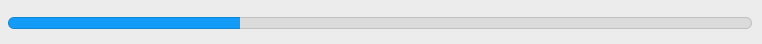
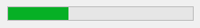
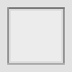
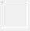
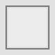
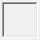
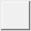

Progress Bar
A progress bar is a window that an application can use to indicate visually the progress of a lengthy operation. It consists of a rectangle that is gradually filled with the system highlight color as the operation progresses. The length of the colored bar in relation to the length of the rectangle corresponds to the percentage of the operation that is complete.
A progress bar has a range and a current position. The range represents the entire duration of the operation. Because these values are expressed as short integers, the highest possible range and current position value is SHRT_MAX. The control itself uses the range and the current position to determine the percentage of the progress bar to fill.
If the width of a progress bar is greater than its height it displays progress information horizontally, from left to right. Otherwise the progress bar is vertical and displays progress status from bottom to top.
By default a progress bar is drawn without frame, however it can have three types of frames: static edge, client edge and modal frame.
-
 
Item type
- DG_ITM_PROGRESSBAR
Frame types
-
Frame type Meaning DG_FT_STATIC Thin three-dimensional border with a sunken edge.   DG_FT_CLIENT Thick three-dimensional border with a sunken edge.   DG_FT_MODAL Thick three-dimensional border with a raised edge. 
GRC Specification
ProgressBar x y dx dy min max [frameType]
where x and y are the pixel coordinates of the upper left corner of the progress bar, dx and dy are the width and height of the control in pixels. min and max define the initial range of the progress bar. If the optional frameType flag is omitted, the progress bar is drawn with a thin three-dimensional border.
Possible values of frameType:
-
Value Meaning StaticEdge The DG_FT_STATIC frame type is set. ClientEdge The DG_FT_CLIENT frame type is set. ModalFrame The DG_FT_MODAL frame type is set.
Modification Flag
DGSetItemValLong, DGSetItemMinLong and DGSetItemMaxLong functions can set the progress bar's modification flag except if they are called when handling the DG_MSG_INIT message in the dialog callback function. Use DGModified or DGResetModified to retrieve or reset (clear) the state of the modification flag.
Remarks
The range of a progress bar can be specified not only in GRC, but by the DGSetItemMinLong and DGSetItemMaxLong functions as well. The possible minimum of the range is zero while the maximum is SHRT_MAX. Use DGGetItemMinLong and DGGetItemMaxLong to retrieve the range of a progress bar. The current value can be set and retrieved by DGSetItemValLong and DGGetItemValLong, respectively.
If either of the range or value setting functions is called, DG checks the consistency of data (i.e. whether the minimum <= value <= maximum condition is true or not). If data are inconsistent, DG automatically adjusts them. For the details of this adjustment see DGSetItemValLong, DGSetItemMinLong and DGSetItemMaxLong.
The position of a progress bar is derived from the current value based on the minimal and maximal value. The relative position is calculated using the following formula: relative position = (value - minimum) / (maximum - minimum). On Windows, if the minimal and maximal values are equal, the progress bar is empty. However, on Macintosh, the progress bar becomes disabled in this case.
Requirements
- Version: DG 1.0.0 or later
- Header: DG.h
See Also
Dialog item types
DGGetItemMaxLong, DGGetItemMinLong, DGGetItemValLong, DGModified, DGResetModified, DGSetItemMaxLong, DGSetItemMinLong, DGSetItemValLong, Callback functions
DG_MSG_INIT